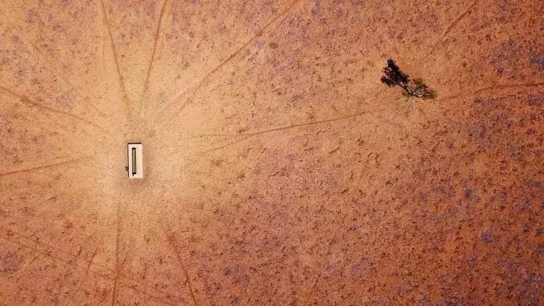

我们的2019
 2018 年，事儿依旧很多，世界依然很大。
2018 年，有着太多不堪的回忆：日本台风，瘫痪东京；普吉岛沉船事故，47 名中国公民因此罹难；台风山竹来袭，广东损失严重；猪瘟肆虐，无数可爱的猪猪被集体活埋；尼泊尔空难、印尼狮航空难、MH370 调查组解散、巴西博物馆大火，无一不刺痛着我们脆弱的心灵。
2018 年，也留给了我们太多的背影与追思：霍金、金庸、斯坦-李、高锟、程开甲、李敖、单田芳、樱桃子、安南、二月河、保罗-艾伦等等等等，他们虽已远去，但永远活在我们心中，愿逝者安息，生者奋进，愿他们的肉体安息土中，更愿他们的灵魂飞向天国。
2018 年，也有很多事件在全社会引起了广泛的争论：重庆公交坠江、于哥反杀龙哥、《我不是药神》、武志红的《巨婴国》、苏州马拉松事件、某著名人物在美国睡了一觉、贺建奎基因编辑事件风波。有争论，很好，这是一个社会进步的表现，但我们的目的，永远不是赢得一场争论。
2018 年，也有许多小乐趣，为我们平淡的生活增色不少：微信跳一跳引发全民狂欢、涛涛与军军的玛丽苏式爱情故事成为了我们喜闻乐见的连载小说、六学横行网络、IG 夺冠、杨超越心直口快、吐槽大会吐槽不断、漫威影业继续在自己的宇宙中开疆拓土、《无敌破坏王 2》带我们走进童年的回忆、《海王》为我们呈现了宏大的亚特兰蒂斯。说起这些电影，我就想到了好莱坞，想到好莱坞，2019 年中美合拍的《西游记》即将开机，希望文体两开花...愿这些小乐趣长留在你的心中，即便你已经忘却了，也愿它们带给你的快乐不会消逝，永远地快乐下去。
来自 2049